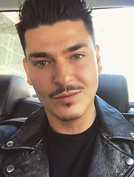

Mario Dedivanovic
.

Acerca De
Uno de los maquilladores más codiciado por los artistas cuyos clientes famosos incluyen a las Kardashian. También es embajador de Anastasia Beverly Hills y ha diseñado su propio programa de entrenamiento llamado The Master Class. Apareció en la serie de TV Glam Masters de Lifetime.
Antes de la Fama
Comenzó su carrera en el maquillaje como empleado junior en Sephora.
Curiosidades
Su cuenta de Instagram tiene más de 6 millones de seguidores y sigue creciendo. Ha tenido colaboraciones con Cover Girl, Marc Jacobs y Laura Mercier, entre otros.
Vida de Familia
Fue criado por padres inmigrantes albaneses en el Bronx, Nueva York junto a su hermano.
Asociación
Fue uno de los maquilladores que trabajó en la boda de Michael Jordan y su esposa Yvette Prieto.
Regresar